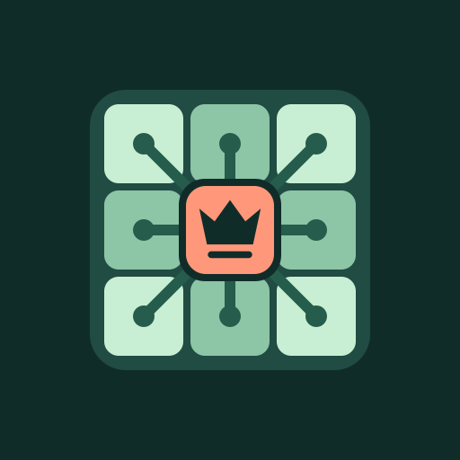
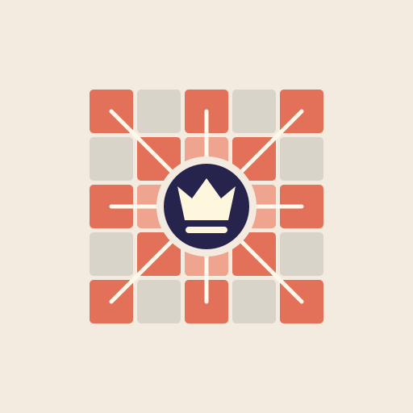
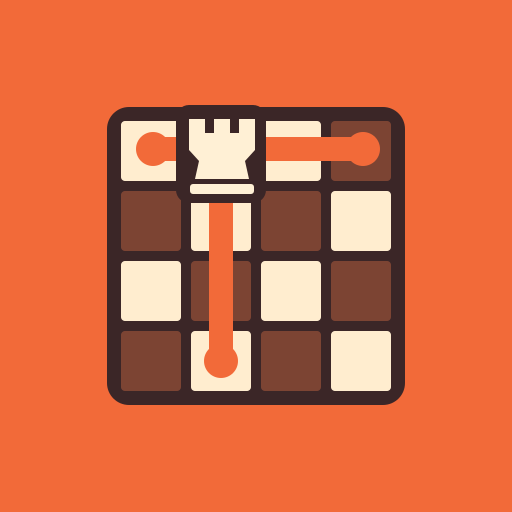

CHESS DOMINATION / CONTROL GRID EXPLORATIONS
01

Relay
The original, amplified
A central queen links all eight surrounding squares. Closest to the original, with clearer endpoints.
Mint + coral · connected targets
02

Crossfire
Show the attack pattern
A five-by-five board makes the queen’s rows, columns, and diagonals visible as claimed territory.
Ivory + clay · mapped influence
03
High Ground
Rule from above
A raised queen commands a diamond-shaped board. Golden paths spread across the playing surface.
Indigo + gold · dimensional
04

Command Lanes
Own the rank and file
An off-center rook controls two bold corridors. A more asymmetric, architectural interpretation.
Vermilion + cream · graphic
05
Total Field
Project a field of control
A queen sits at the intersection of eight rays, surrounded by a circular field over the board.
Charcoal + acid lime · high contrast